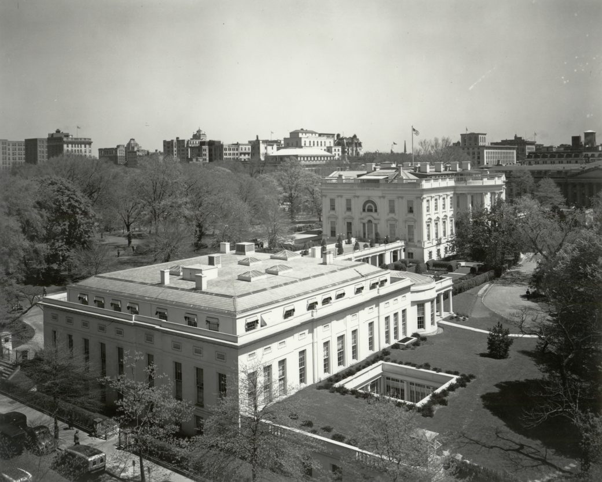
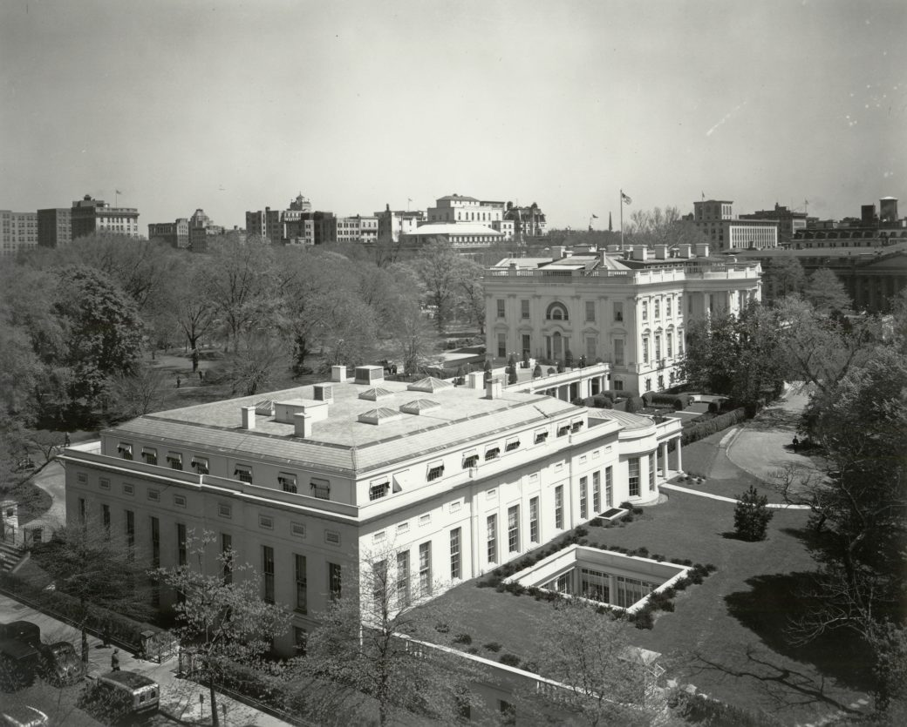

West Wing of the white house
The West Wing of the White House houses the offices of the president of the United States. The West Wing contains the Oval Office, the Cabinet Room, the Situation Room, and the Roosevelt Room.
The West Wing's four floors contain offices for the vice president, White House chief of staff, the counselor to the president, the senior advisor to the president, the White House press secretary, and their support staffs. Adjoining the press secretary's office, in the colonnade between the West Wing and the Executive Residence is the James S. Brady Press Briefing Room along with workspace for the White House press corps.
 

Executive Branch Overview
East Wing
Home